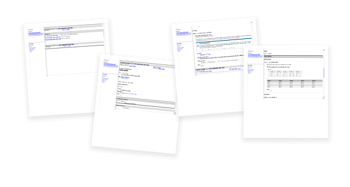

User Guide: Simple Usage
This user guide section deals with the most simple usage of the
Taglets Collection. Taglets InvocationPlease take a look at the examples directory. It contains a simple demonstration use of the Taglets Collection. The sources included do not serve any purpose except to provide a basis for JavaDoc to work on. The following subsections show how to invoke JavaDoc to use the Taglets Collection, the following methods are described: This simple demo will only include the Taglets Collection in the generation of the JavaDoc documentation. No specific configuration of either the Tagles Collection or the JavaDoc execution is done, i.e. you are looking at the most simple usage... OutputTo give you an idea what the output of the generated documentation will look like we have included a sneak preview:

As you can see, the default tags provided by the Taglets Collection are already fully functional. Also, the default style used for the JavaDoc output uses the same faint gray style used by the Taglets API doc. The output style is of course fully customizable, but this is a topic for the Extended Usage section... CommandlineTo build the JavaDoc of this sample using commandline tools execute the commands described below. (To simplify command invocation all packages required to build the JavaDoc have been stored in a package file suitable for use with the JavaDoc '@file' argument.) On Unix/Mac OS X $ javadoc \
-taglet net.sourceforge.taglets.Taglets -tagletpath ../../taglets.jar \
-d doc -sourcepath src @packages.txtNote: The \ is the commandline continuation character, it is used only to improve readability of the sample above. Usually you write the whole command on a single line... or on Windows > javadoc ^
-taglet net.sourceforge.taglets.Taglets -tagletpath ..\..\taglets.jar ^
-d doc -sourcepath src @packages.txtNote: The ^ is the commandline continuation character, it is used only to improve readability of the sample above. Usually you write the whole command on a single line... BatchfileTo give an idea how you might invoke JavaDoc that uses the Taglets Collection simply check out the batchfiles listed below. (They are also included in the demo/simple directory as build.sh or build.cmd respectively.) Note: Make sure you execute them in the directory they are stored, they use relative pathes. Unix/Mac OS X build.sh #!/bin/sh
# Shell script to create the JavaDoc of the simple demo.
TAGLET_CLASS="net.sourceforge.taglets.Taglets"
TAGLET_PATH="../../taglets.jar"
TAGLETS="-taglet ${TAGLET_CLASS} -tagletpath ${TAGLET_PATH}"
rm -r doc
exec javadoc ${TAGLETS} -d doc -sourcepath src @packages.txtWindows build.cmd @echo off REM Build command to create the JavaDoc of the simple demo. REM Prevent propagation of environment variables. IF "%OS%"=="Windows_NT" @setlocal SET TAGLET_CLASS=net.sourceforge.taglets.Taglets SET TAGLET_PATH=..\..\taglets.jar SET TAGLETS=-taglet %TAGLET_CLASS% -tagletpath %TAGLET_PATH% del /s /q doc javadoc %TAGLETS% -d doc -sourcepath src @packages.txt IF "%OS%"=="Windows_NT" @endlocal Apache AntBy far the most simple method of building the JavaDoc for the sample is by using Apache Ant. Not only will it work on any platform, it is also the most simple way to configure all the JavaDoc features. A very basic build.xml looks as follows: <?xml version="1.0" encoding="ISO-8859-1"?>
<!--
Ant build file to create the JavaDoc of the simple demo.
-->
<project basedir="." default="doc" name="Simple">
<target name="doc" description="Builds the Demo JavaDoc" depends="clean">
<javadoc destdir="doc">
<taglet name="net.sourceforge.taglets.Taglets" path="../../taglets.jar"/>
<fileset dir="src" includes="**/*.java"/>
</javadoc>
</target>
<target name="clean" description="Removes the generated doc folder">
<delete quiet="true" includeEmptyDirs="true">
<fileset dir="doc"/>
</delete>
</target>
</project>Note: As with the other build files, the build.xml file listed above is readily included in the demo/simple folder of your distribution. Extended UsageThis concludes the first section showing how to get started integrating the Taglets Collection in your JavaDoc runs. To see a more advanced application head over to the next section, Extended Usage. This section will cover how to tweak JavaDoc output and how to configure some of the taglets properties. |